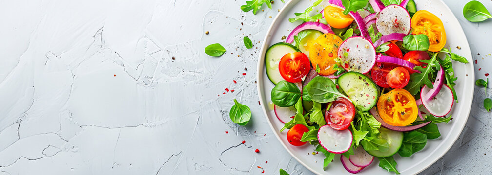
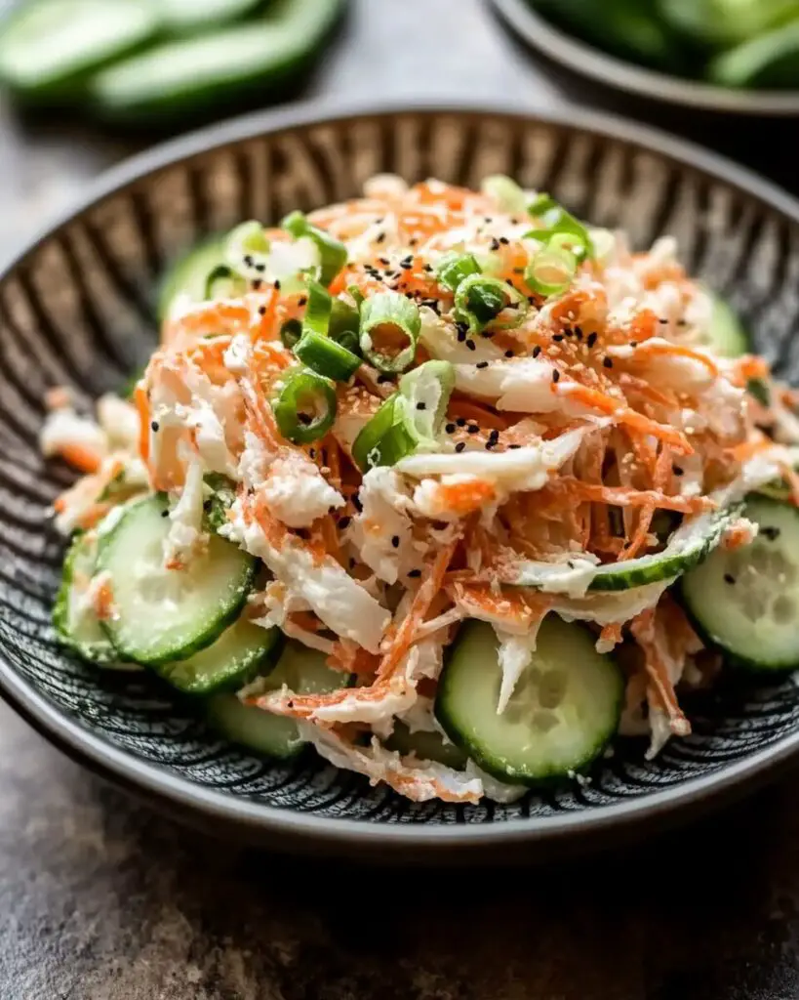
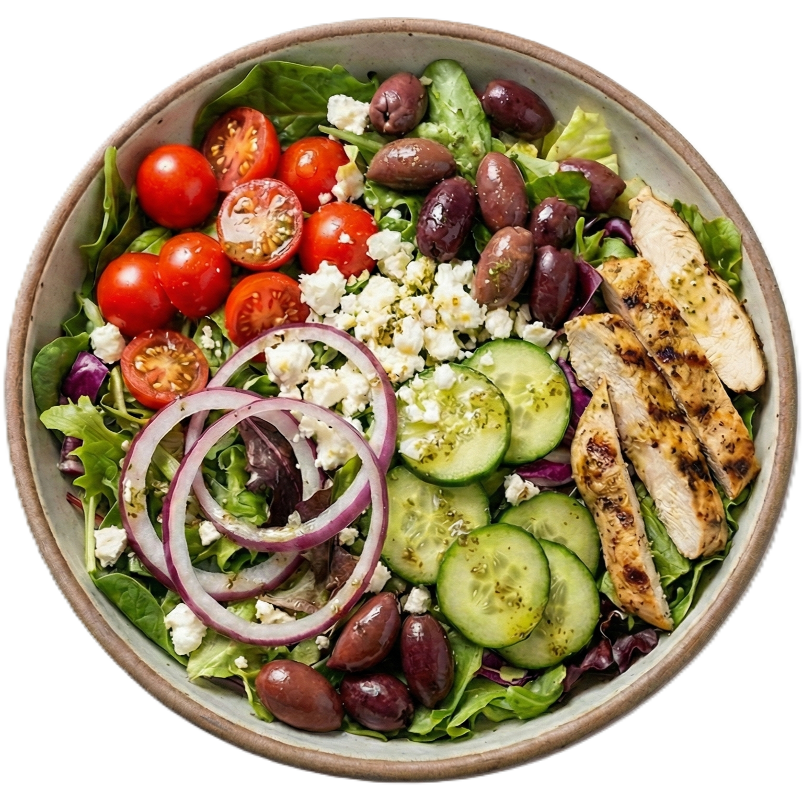
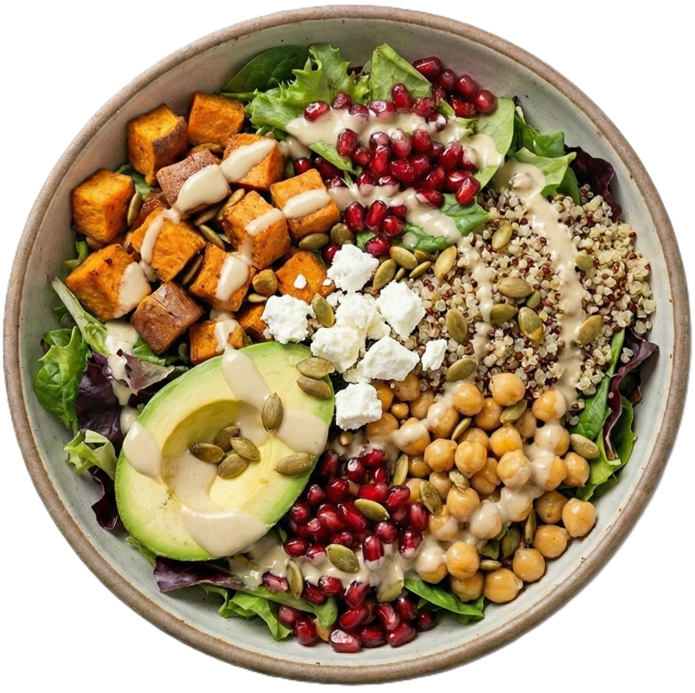
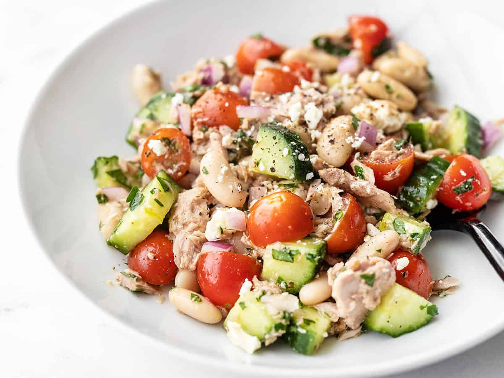

japanese crab salad
Seafood salad

Mediterranean Grilled Chicken Bowl
Meat salad

Sweet Potato & Quinoa Power Bowl
Vegan salad

Mediterranean Tuna Salad
sweet potato and quinoa salad
Japanese crab salad